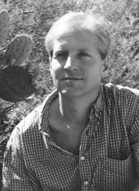

|
 ANDREW
GEYER'S first novel, Ring Around the Moon, is
due out in early 2006 from University of New Mexico Press. His debut
short story cycle, Whispers in Dust and Bone (TTUP 2003) won the
silver medal for Short Fiction in the Foreword Magazine Book of the
Year Awards, and was named a finalist for the John Gardner Fiction Book
Award. One of the stories in the collection won the Spur Award from the
Western Writers of America for best work of Short Fiction published in
2003. Geyer's fiction has appeared in numerous literary magazines, and
has been nominated for the Pushcart Prize. He is currently an Assistant
Professor in the BFA Program in Creative Writing at Arkansas Tech
University.
|